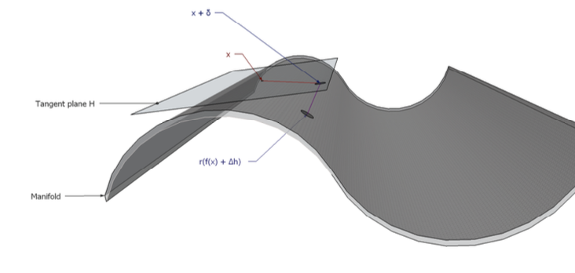

In short: recent developments in AI can be thought of as computers getting access to the latent space that underlies reality.
Summary
- In short.
-
Reality has a low-dimensional structure. The signals we send and receive are high-dimensional (images, audio, text), but they are clustered such that they can be represented almost without loss in a low-dimensional space.
- We have only recently taught computers to perform the mapping between low- and high-dimensional representations, and the economic effects of AI are a consequence of this.
- The manifold hypothesis.
-
Bengio et al. (2012) define the manifold hypothesis: “real-world data presented in high dimensional spaces are expected to concentrate in the vicinity of a manifold of much lower dimensionality.”
This can be thought of as a nonlinear version of principal components analysis. Computer scientists say that neural nets work well because they’re a good fit for the nature of real-world manifolds (Bengio says neural nets encode a prior that the manifold is smooth, sparse, and hierarchical).
signal (high dimensional) state (low dimensional) image objects, angle, lighting audio text, speaker, tone, volume text meaning, style, phrasing - Statistical implications of the manifold hypothesis.
-
- Signals are redundant: if you remove a pixel from an image or a word from a text you can predict what the missing point was with high confidence.
-
- Signals are compressible: you can reconstruct a signal with high accuracy using a low-dimensional representation.
-
- Unsupervised learning is useful: Passive observation of the world helps you learn the manifold, and so makes you much better at subsequent supervised learning. Likewise learning to predict one label helps you predict other labels (transfer learning).
-
- Shallow algorithms fail at high dimensional tasks: Non-hierarchical learning methods (regression, decision trees) work well if you feed them the low-dimensional state, but work badly if you feed them the raw high-dimensional signal.
- Application to human abilities.
-
It is useful to think of the human brain as extracting a low dimensional state from a high dimensional signal (perceptual input, words, etc.).
Most of our perceptual ability is clearly unconscious: we are able to make very subtle inferences from huge amounts of sense data but we have limited conscious introspection into that judgment, e.g. judging how far away a tree is, judging how old a person is from their face, judging someone’s identify from their voice. Psychologists will often say that the pre-conscious brain is doing some kind of Bayesian inference before presenting the results to the conscious brain.1
An important observation about human capabilities is that they are asymmetric: it’s trivial to recognize whether an object has some property (a joke is funny, a picture is beautiful) but it’s far harder to create an object that has that property. This type of asymmetry can arise from a computational asymmetry (P vs NP), but I think the cause is different, it’s because our konwledge is tacit.2
- Application to computer history.
-
Computers have been able to beat humans at all sorts of computational tasks since the 1940s, including low-dimensional statistical inference (e.g. linear regression).
- Only recently they’ve become able to match human ability in making inference about high-dimensional objects like text, audio, images. This is because it takes a lot of data to learn the mapping between low-dimensional state and high-dimensional signal. Notably computers can do the mapping both ways: they can recognize whether a picture contains a cat (like a human), and they can also create a picture that contains a cat (much harder for humans).
- Application to recommenders.
-
Historically recommenders which used the content of items were not very effective, e.g. recommending music to someone based on their preferences over tempo, or recommending web pages based on raw text matches. As a consequence the most successful recommender and classifier algorithms relied on engagement instead of content: e.g. pagerank, collaborative filtering.
- However neural nets are now powerful enough to extract the latent semantic content of an item, so we can directly model someone’s judgment of an item as a function of its content, instead of proxying their judgment with other peoples’ judgment of that item. Implications: (1) we can now recommend content even when we have no engagement data (solving the “cold start” problem); (2) we’re no longer constrained by what content already exists, we can now synthesize new content to maximize some function, e.g. synthesize advertisements to maximize click-through rate. (See a case study on the history of content classification here).
- Application to intellectual property.
-
Suppose that humans can recognize the properties of an object (whether a joke is funny, painting is pretty, etc.), but they can’t create an object with a given set of properties. Then society will be characterized by copying: people will repeat the same jokes, reproduce the same paintings. In this world it’s efficient to have protection of intellectual property to incentivize discovery of new objects.
- However now suppose we teach a computer to recognize the properties of an object (which means learning the manifold), but it can also do the reverse, i.e. it can easily create a funny joke, or paint a pretty painting. In equilibrium there will now be much less imitation, and the efficient intellectual property regime will change. We shouldn’t allow the first person (or algorithm) who is able to see the entire latent landscape to claim ownership of everything that they discover.
- Application to communication.
-
I wrote a note last year with some prediction about how LLMs will affect communications, which I think is consistent with this manifold hypothesis.
-
- For properties where human judgment is the ground truth (e.g. whether something is grammatical, is hate speech, is pornographic), then AI classifiers will achieve perfect accuracy, & this favors defense.
-
- For properties which refer to some outside fact (whether a statement is true, whether an image depicts a real event, whether a painting is a forgery), then AI synthesis will degrade the ordinary human ability to make inferences from the content of the item, & so we will have to rely relatively more on signals of provenance.
- Application to LLMs.
-
We can think of pre-training an LLM as discovering the low-dimensional structure of text, and that low-dimensional structure includes all the knowledge expressed in the training text. Once you have learned how to transform a piece of high-dimensional text into a low-dimensional semantic representation then suddenly a lot of intractable problems become tractable. E.g. you can train a model on a few pairs of (question,answer) and get a pretty useful chatbot (AKA ChatGPT). This would be a wildly intractable problem without the low-dimensional representation.
-
There’s another interesting observation about chatbots: they’re mostly trained to give an answer that the user prefers. But why would you ask someone a question if you already know which answer is best? This is explicable either (1) if we train a chatbot to maximize the preferences of an expert, not the average person; (2) if it’s easier for humans to recognize a good answer than to create one, either because of tacit knowledge or a computational constraint.
- Application to wages.
-
Here is a very stylized model which incorporates the manifold hypothesis. Suppose that comparative advantage across people is entirely due to their private knowledge: painters know how to paint, programmers know how to program, etc.. It’s hard to justify this assumption in a purely rational model because you could just write down the information and sell it, but it makes more sense if knowledge is tacit and there’s learning-by-doing.
- Suppose now that LLMs can observe everyone’s actions and extract their tacit knowledge. Intuitively, you now have an assistant in your pocket who can answer any question that you’d normally go to a domain expert for, and so the rents to expertise will collapse.
- This can be formalized as a pure trade model, where each agent has a vector of productivities, and there’s some global equilibrium price vector. The LLM makes private knowledge public, and so raises everyone’s productivity at each task to the level of the world expert. This has the following implications:
-
- Wages of the highest-paid fall, but aggregate output increases (“leveling up”)
-
- Exchange will fall (and so GDP may fall) because you can do most things yourself – e.g. you wouldn’t call a doctor because you can diganose yourself.
-
- The incentives to acquire new knowledge decline (insofar as an LLM can extract your knowledge by watching you work).
- However it’s notable that LLMs can beat most people on most knowledge-based questions, and yet they still have relatively minor productivity effects, so there’s something missing from their set of capabilities, & that’s still somewhat of an open question.
Types of Problems
- General setup:
- you’re given a question q∈Q, choose an answer a∈A, and get payoff y(q,a). My claim is the shape of the function y(.,.) will determine everything.
- There are two useful subtypes.
-
- Low-dimensional question (landscape navigation). Suppose we face the same problem over and over but there are many possible distinct answers, then so there’s an explore-exploit problem. More precisely, suppose \(y(q,a)|q\) is a rugged function of \(a\).
- Low-dimensional answer (question-answering). Suppose we constantly get different questions but the answer is just a binary of scalar. This is like a classic supervised learning problem.
| type | problem | question | answer | notes |
|---|---|---|---|---|
| questions | What digit is in this image (MNIST)? | |||
| What is the sum of X and Y? | ||||
| What was last transaction by account XXX? | Many real-world record-keeping problems like this | |||
| What chess move to play here? | ||||
| Color pixel in Mandelbrot | low | low | ||
| landscape |
- Claims about capacities of human & computer brains:
-
- Classic computers are bad when there’s high manifold curvature.
- Classic computers are good when there’s
Alternative Setup
[TODO: add a diagram showing generating process, breadth and depth of generating process]
- Two characteristics of prediction problems.
-
- Manifold dimensionality. – high dimensionality if it’s irreducibly complex, e.g. a telephone book full of numbers.
-
- Manifold curvature. – high curvature if it’s complicated to map the surface dimensions to the output – low curvature if it’s all linear.
| low manifold dimension | high manifold dimension | |
|---|---|---|
| low manifold curvature | - add two numbers | - telephone number from name |
| - business database | ||
| - directions from address | ||
| high manifold curvature | - encrypt data | - classify an image |
| - play best chess move | - understand language | |
| - prove theorem true/false | - predict weather (chaotic system) | |
| - find optimum point | ||
| - color a pixel in mandelbrot set | ||
| - predict position of a star | ||
- The learning rate depends on both dimensionality and curvature.
-
A nonparametric estimator will be slow if either (A) there’s high intrinsic dimensionality; or (B) the manifold is highly curved.
However if you know the shape of the manifold already, then you’re only limited by the intrinsic dimensionality.
- Computers are good at problems with low curvature.
-
They can learn sets of facts and follow logical rules very well. They’re extremely good at problems with low curvature.
- Humans have progressively found lower-dimensional representations of many problems.
-
E.g. Newton, Copernicus, Mendeleev, etc., all found much simpler latent representations of many problems.
They have discovered the curvature of the manifold, so apparently high-dimensional problems become low-dimensional.
- The manifold hypothesis: many problems have low-dimensional representations.
-
Problems which appear to have high dimension actually have low dimension.
Implication: it’s valuable to do unsupervised or self-supervised pre-training, to figure out the manifold, and then you can do supervised learning on top of that.
- Economics literature on returns to experience.
-
- Deming (2024): more complex occupations have steeper returns to experience.
- Nedelkoska (2025) “[we] find that employees receive a positive wage premium to the complexity of their job and that workers in highly complex occupations acquire twice as much skills throughout life compared to less complex occupations.”
Formal Setup [SKETCH]
[THESE ARE ALL ROUGH WORKING NOTES – DON’T TAKE TOO SERIOUSLY]
See 2023-10-26-models-of-ai-and-the-world.qmd
\[ \xymatrix@R=1em@C=2em{ \txt{state} & \txt{signal} & \txt{representation} \\ & \boxed{x_{1}}\ar[dddr]\ar[dr] \\ v_1\ar@{-}[ur]\ar@{-}[r]\ar@{-}[dddr]\ar@{-}[ddr] & \boxed{x_{2}}\ar[ddr]\ar[r] & \hat{v}_1\\ {\tiny\vdots} & {\tiny\vdots} & {\tiny\vdots} \\ v_q\ar@{-}[uuur]\ar@{-}[uur]\ar@{-}[r]\ar@{-}[dr] & \boxed{x_{p-1}}\ar[r]\ar[uur] & \hat{v}_q\\ & \boxed{x_{p}}\ar[ur]\ar[uuur]} \]
| signal (\(q\)-dimensional) |
state (\(p\)-dimensional) |
|---|---|
| image | objects, angle, lighting |
| text | meaning, style, dialect, phrasing |
| audio | speaker, words, tone |
\[\begin{aligned} Q &=\text{dimension of state}\\ P &=\text{dimension of signal}\\ N &=\text{number of observations}\\ \bm{x}_n &\in \mathbb{R}^P && \text{observation (image, text, sound)}\\ \bm{v}_n &\in \mathbb{R}^Q && \text{state (objects, meaning, words)}\\ P &\gg Q && \text{(signals have higher dimensionality than state)}\\ f&:R^Q\rightarrow \mathbb{R}^P && \text{1:1 mapping between signal and state} \end{aligned} \]
Observations:
- The space of signals will be sparse.
- Because \(P>Q\) and the mapping is 1:1 most realizations of \(x\in X\) would never be observed. E.g. most configurations of pixels are static, most configurations of words are gibberish: they don’t have any interpretation at all (no \(\bm{v}\)) and so you would almost never encounter them.3
- Signals will be redundant.
- The state \(\bm{v}\) over-determines the signal \(\bm{x}\), so if you remove some of the information from the signal then you can reconstruct them with very high confidence.
- Technically the state-space has high dimensionality, but effectively it has low dimensionality.
-
In some cases we think signals are under-determined by the state rather than over-determined, i.e. that \(q>p\), e.g. (1) images are 2D projections of a 3D world, so the signal seems lower-dimensional than the state; (2) a given sentence is often ambiguous between many possible meanings, and the disambiguatin is done by context, implying the set of sentences is lower-dimensional than the set of meanings.
- In principle the state has very high dimensionality, higher than the signal, but in practice we have such strong priors about the state that its effective dimensionality is lower than the signal space. A full representation of the state requires a dimensionality \(\bar{q}\gg p\), but in practice the state has such strong regularities that the majority of the variation requires a much lower-dimensional representation \(q\), so we have:
- \[\utt{\bar{q}}{dimensionality}{of world}\gg \utt{p}{dimensionality}{of signal} \gg \utt{q}{dimensionality}{of state}\]
- Signals are highly compressible.
- This model implies that you can compress signals from a \(P\)-dimensional object down to a \(Q\)-dimensional object.
- Computers can learn the state but it takes a lot of data.
- We can model computers as slowly learning how to transform between \(\bm{v}\) and \(\bm{x}\) but it requires an enormous amount of training data. We talk about the computer’s problem as a PCA problem below.
- Extension: humans find it easier to decode than encode.
- Humans have an asymmetry about some things: they tend to be better at decoding than encoding, e.g. we can recognize whether a picture looks like Rishi Sunak but we can’t draw a picture that looks like him. We can model this as humans being composed of two agents, conscious and pre-conscious: the pre-conscious brain has private information which it uses to calculate \(\hat{v}=E[v|x]\), and the conscious brain only observe the posteriors from the pre-conscious brain (nice analogy: a person with a sniffer dog).
Problem: No Closed-Form Solution
We want a model where you observe a matrix of \(p\) features for \(n\) cases, which are generated from some lower-dimensional representation. There are two problems:
- Doing the inversion – you infer the low-dimensional state for each case. This is straight-forward (I think).
- Learning the inversion – finding an optimal low-dimensional decomposition. It’s not clear to me whether we can get analytic solutions. Udell says “low rank approximation problems are not convex, and in general cannot be solved globally and efficiently.”
Model 1: PCA
\[\begin{aligned} \utt{\begin{bmatrix}h_1^1 \ldots h_p^1 \\ \ddots \\ h_1^n \ldots h_p^n\end{bmatrix}}{observed dataset}{$n$ cases and $p$ features} = \utt{\begin{bmatrix}w_1^1 \ldots w_q^1 \\ \ddots \\ w_1^n \ldots w_p^n\end{bmatrix}}{$p$ loadings}{on $q$ factors} \utt{\begin{bmatrix}x_1^1 \ldots x_q^1 \\ \ddots \\ x_1^n \ldots x_q^n\end{bmatrix}}{$n$ latent vectors}{on $q$ factors} \end{aligned} \]
Bengio et al. write it as: \[h=W^Tx+b\]
and give a probabilistic interpration (“PCA can be given a natural probabilistic interpretation (Roweis, 1997; Tipping and Bishop, 1999) as factor analysis:”) \[\begin{aligned} p(h)&=N(h;0,\sigma_h^2\bm{I})\\ p(x|h) &= N(x;Wh+\mu_x,\sigma_x^2\bm{I}) \end{aligned} \]
Tipping and Bishop (1999) write: \[\bm{t}=W\bm{x}+\bm{u}\]
and they show that if you assume Normal distribution of \(\bm{x}\) and \(\bm{u}\) then you can find a weight matrix \(W\) which maximizes likelihood. They do not assume a prior over the weights themselves (p614).
PCA with a single factor (gymnastics)
If there’s a single factor plus noise then we can write everything like this:
\[\begin{aligned} \utt{\begin{bmatrix}h_1^1 \ldots h_P^1 \\ \ddots \\ h_1^N \ldots h_P^N\end{bmatrix}}{observed dataset}{$N$ cases and $P$ features} = \utt{\begin{bmatrix}x^1 \\ \vdots \\ x^N \end{bmatrix}}{latent value}{for each case} \utt{\begin{bmatrix}w_1 & \ldots & w_P \end{bmatrix}}{weight for}{each feature} + \begin{bmatrix}\varepsilon_1^1 \ldots \varepsilon_P^1 \\ \ddots \\ \varepsilon_1^N \ldots \varepsilon_P^N\end{bmatrix} \end{aligned} \]
We can also write it out like this:
\[\utt{h_{n,p}}{feature $p$ of}{case $n$} = \utt{x_n}{avg score}{of this case} \times \utt{w_p}{avg score}{of this feature} + \ut{e_{n,p}}{noise}\]
Answer when \(P=1\). Suppose we have a single feature and there’s no noise. So there’s many contestants and just one judge. Then we have this: \[\utt{h_n}{observed score}{of each case} = \utt{x_n}{true}{value} + \utt{w}{common}{noise}\]
Assume we have mean-zero Gaussian priors over all RHS variables, then we can write: \[\begin{aligned} E[x_n|h_n] &= \frac{\sigma_x^2}{\sigma_x^2+\sigma_w^2}h_n \\ E[w|h_n] &= \frac{\sigma_w^2}{\sigma_x^2+\sigma_w^2}h_n \\ E[w|\bm{h}] &= \frac{\sigma_w^2}{\sigma_w^2+\sigma_x^2/N}\frac{1}{N}\sum_{m=1}^Nh_m \\ E[x_n|\bm{h}] &= h_n-E[w|\bm{h}] \\ &= h_n-\frac{\sigma_w^2}{\sigma_w^2+\sigma_x^2/N}\bar{h} \\ \end{aligned} \]
Implications:
- when \(N=1\) then \(\hat{x}_n=\frac{\sigma_x^2}{\sigma_w^2+\sigma_x^2}h_n\)
- when \(N=2\) then \(\hat{x}_1=\frac{\sigma_w^2/2+\sigma_x^2/2}{\sigma_w^2+\sigma_x^2/2}h_1-\frac{\sigma_x^2/2}{\sigma_w^2+\sigma_x^2/2}h_2\)
- when \(N\rightarrow\infty\) then \(E[x_n|\bm{h}]\simeq h_n-\bar{h}\).
Old answer (but I think it’s wrong). Suppose we have priors over the RHS variables that are mean-zero with known variances. Then I think our estimate will be as follows, but I need to confirm:
\[\begin{aligned} \hat{x}_n= E[x_n | \bm{h}] &= \frac{n \sigma_a^2}{n \sigma_a^2 + \sigma_e^2} \left( \frac{1}{P}\sum_{p=1}^P h_{n,p} - \frac{1}{NP}\sum_{m=1}^N\sum_{p=1}^Ph_{m,p} \right) \\ &= \frac{n \sigma_a^2}{n \sigma_a^2 + \sigma_e^2} \left( \bar{h}_{n.} - \bar{h}_{..} \right) \\ \end{aligned} \]
- Suppose there’s no noise: then we learn relative row values and relative column values exactly, but we’re missing overall calibration. Our posterior is just the relative row value.
Variance of the posteriors [UNFINISHED]. We now derive the variance of the posteriors. We’ll start by assuming no noise:
\[\begin{aligned} \hat{x}_n &= \frac{1}{P}\sum_{p=1}^P h_{n,p} - \frac{1}{NP}\sum_{m=1}^N\sum_{p=1}^Ph_{m,p}\\ &= \\ V[\hat{x}_n-x_n] &= \sigma_N+\frac{1}{P^2}\sigma_P^2 \\ \end{aligned} \]
(For derivation see 2024-07-20 note.)
| ChatGPT prompt. |
| > I want to find an analytically tractable expression for a model with dimensionality reduction. Suppose we have H=x’w+e, so we have \[h_{n,p}= x_n + w_p + e_{n,p}\] |
Suppose we observe the cells of this 2x2 matrix, which is formed by adding rows and columns: \[\begin{bmatrix} x_1 + y_1 & x_2 + y_1 \\ x_2 + y_1 & x_2 + y_2 \end{bmatrix}\]
We have mean-zero Gaussian priors over x and y, can you write an expression for the posterior
Model 2: Questions and Answers
This is the model I used in my imitation note. We observe a set of \(n\) questions and answers. Each question is a vector of \(p\) attributes, and the answer is the weighted sum of those attributes, but we need to infer the weights.
\[\begin{aligned} \ut{\begin{bmatrix}a^1 \\ \vdots \\ a^n\end{bmatrix}}{answers} &= \utt{\begin{bmatrix}q_1^1 + \ldots q_p^1 \\ \vdots \\ q_1^n + \ldots q_p^n\end{bmatrix}}{multi-attribute}{questions} \ut{\begin{bmatrix}w^1 \\ \vdots \\ w^p\end{bmatrix}}{weights}\\ \utt{\bm{a}}{$n\times1$}{observed} &= \utt{Q}{$n\times p$}{observed}\cdot \utt{\bm{w}}{$p\times1$}{unobserved} \end{aligned} \]
Then we have a simple expression for the posterior: \[\begin{aligned} \hat{\bm{w}}=E[\bm{w}|Q,\bm{a}] &= Q'(QQ')^{-1}\bm{a} \end{aligned} \]
Misc
Another model: multidimensional signal, multidimensional state, and a mapping matrix: \[\utt{\bm{x}_n}{$P\times 1$}{signal} = \utt{A}{$P\times Q$}{mapping} \cdot \utt{\bm{v}_n}{$Q\times1$}{state}+ \utt{e_n}{$P\times1$}{noise} \]
Related: solving a least-squares model when over-determined or under-determined - tweet, Wikipedia
Applications
\[\xymatrix@R=1em@C=.5em{ \txt{high-\\dimensional\\state} & \txt{low-\\dimensional\\signal} & \txt{high-\\dimensional\\representation} \\ v_1\ar[dr] & & \hat{v}_1 \\ & \boxed{x_1}\ar[ur]\ar[dr] & \\ v_2\ar[ur] & & \hat{v}_2} \]
Summary:
In many fields we model problems as \(n>p\) and \(q>p\).
- Statistics: \(n>p\)
- Economics: \(n=\infty\), \(q>p\).
- Signal extraction: \(n=\infty\), \(q>p\).
- Perception: (…).
Application to Communication
Application to internal properties. An internal property of a signal is one that depends entirely on the content of the signal itself, not on anything outside the signal: e.g. whether a text is hate speech, whether a photo contains nudity, whether a song is catchy.
- Baseline: human judgment. ordinarily humans can immediately judge \(\hat{\bm{v}}(\bm{x})\) and using \(\hat{\bm{v}}\) tell whether it has a given internal property.
- Computer with small m: When \(m\) is small the computer learns only a very crude approximation of \(A\). In practice we give the computer labelled data, \(\hat{v}_1\), and we give the computer a very small set of features \(x_1,x_2\), and the computer runs a simple regression, \(\hat{v}_1\sim x_1+x_2\).
- Evasion of computer: If the human knows the computer’s algorithm, \(\hat{v}_1(x_1,x_2)\), then it’s trival to get around it: even if the human doesn’t know \(x\rightarrow v\) perfectly, still they can just fiddle with \(x_1\) and \(x_2\), e.g. mispelling the trigger words, or changing the colour of an image.
- Computer with large m: Now the computer learns \(A\) perfectly, they have human-level performance, and it’s impossible to evade it.
Application to external properties. An external property depends on something outside the signal: e.g. whether a photo depicts something that actually happened, whether a poem was written by Shakespeare. The content of the signal can be informative but it’s not definitive.
- Baseline: signals all created by the world. Consider recorded media (photo, audio), and suppose that they are only created by events that actually happened. Thus encoding, \(\bm{v}\rightarrow\bm{x}\), is done by the laws of physics, and decoding is done by the human brain.
- Manipulation by humans. Suppose now a human wants to modify or synthesize a signal. It’s hard! Humans can automatically convert \(x\rightarrow\hat{v}\), but that is done by a pre-conscious part of the brain, so they don’t know how to tweak \(\bm{x}\) to change \(\hat{\bm{v}}\). They could make random changes and see what happens to \(\hat{v}\) but this is extremely slow. In addition, because the \(\bm{x}\)-space is sparse, the receiver would recover a \(\hat{v}\) which has extremely low probability, and they would infer that the signal has been tampered with (in practice: the photo would have weird inconsistencies, or the audio would be clipped).
- Computer with small \(m\). A computer with a small \(m\) might be able to do crappy classification (\(x\rightarrow v\)), but it wouldn’t be very robust: e.g. it would learn that images with yellow backgrounds are typically of camels. You could reverse the algorithm to produce an \(x\) which maximizes \(\hat{v}\) but it would be very ugly & obviously fake.
- Computer with large \(m\). Now suppose the computer can perfect convert \(x\leftrightarrows v\): they can synthesize an arbitrary image, & it’s impossible to discriminate from a real image. Suppose receivers are naive, they think that if they observe \(x\), then \(\hat{v}(x)\) really happened. Then strategic senders can arbitrarily manipulate their beliefs, e.g. creating photos of politicians doing scandalous things.
- Equilibrium.
- If all senders are strategic then I think you get a babbling equilibrium: you now learn nothing from \(\bm{x}\).
- If some senders are strategic then there will be some non-zero persuasive power of media. In the medium run you’d expect more entry by strategic senders until the returns to creating media go to zero: you could write equilibrium with the share of fakes pinned down by the intersection of two curves: (1) creation of fake media as a function of credence; (2) credence in media as a function of prevalence of fakes.
- Platforms might pay some cost \(c\) to check the veracity of some media, when the probability of being fake exceeds a threshold. This would put a ceiling on the influence of fake media.
Application to Intellectual Property
(see AI and intellectual property, I think it can be put in this framework)
Applications to Economics
Most models of inference in economics have the agent receives a signal that is not fully revealing of the state because it has lower cardinality than the state (e.g. a binary signal), or because there is noise (then you can think of the noise as part of the state, and so the state is higher-dimensional than the signal). E.g.:
- Estimating the productivity of an employee from their education.
- Estimating demand conditions from sales.
- Estimating the competence of a politician from economic conditions.
- Estimating the quality of a product from peer usage of that product.
Yet in practical situations information sets often do not seem to be discrete or univariate, instead they’re enormously rich: we have the newspaper, we have millions of datapoints about employees, we have the internet. Let’s try to reinterpret these situations:
- Estimating the productivity of an employee from meeting them and watching them work.
- Estimating demand conditions from reading the newspaper and trying to infer the state of the world.
- Estimating the competence of a politician from their speeches, their mannerisms, how journalists and other politicians talk about them.
- Estimating the quality of a product from the label.
Application to Recommender Algorithms
We want to predict a person’s response to an item. The item could be a post, a song, a video, an advertisement, a product. The person’s response could be clicking, purchasing, upvoting, or labelling as toxic.
Model: low-dimensional semantics. I will state a simple model of human judgment and then try to describe some of the facts we observe about recommendation. Assume that the content of each item (pixels, characters, etc.) can be represented in a low-dimensional space, the “semantics.” Each person’s response is fully determined by the semantics, though different people have different weights.
World without computers. There are many practical decisions people make about others’ judgments: will people like this concerto? how many copies is this book likely to sell? is this painting obscene? Then we can use a mixture of our own judgments and simple statistics about others judgments – e.g. what are the best-selling books, what are the most-beloved paintings.
Very small computers. Suppose our computers can digitize data about preference but not the full content of the items themselves. Then we can do collaborative filtering to predict preference, irrespective of the content.
Small computers. Suppose we now have access to the full digital representation of each piece of content. Somewhat surprisingly this information is not very useful: the relationship between surface-level features and preference is pretty noisy. Shallow features are somewhat informative: e.g. the tempo of a song, the proportions of a painting, can be predictive of preference, but these features don’t have much predictive value relative to collaborative filtering.
Large computers. Now suppose we have computers that are large such that they can extract the semantics of each item with high accuracy.
- Implication: the content discovery problem (AKA cold start) is solved.
- Implication: we will start synthesizing content. (However a classifier that has high accuracy on its training set could perform badly off-distribution, and thus do badly in synthesizing content).
Suppose our raw data looks like this, where we have observations \(j\in 1\ldots J\): \[\begin{aligned} \bm{x}^j & && \text{high dimensional input}\\ i^j &\in N && \text{identity of rater}\\ R^j &\in R && \text{rating} \end{aligned} \]
Search engines are similar: History of search engines:
- Text match between query and document.
- Pagerank for the quality of a document.
- Predict click-through rate and satisfaction rate.
- Semantic match.
Application to Statistics
Applied to statistics. The canonical statistical inference problem is where the number of observations is larger than the number of features (\(n>p\)), e.g. linear regression is only well-defined when \(n>p\).
Application to Chatbots
If you train on sufficiently many held-out words then you eventually learn the mapping from \(x\) to \(v\).
Now you can post-train on question/answer pairs (SFT) or on human preferences (RLHF), and you’ll get very accurate very quickly.
Related Literature
- Tipping and Bishop (1999) “Probabilistic Principal Component Analysis”
- They show that “the maximum likelihood estimators for the isotropic error model … do correspond to principal component analysis.”
-
Factor analysis differs from PCA in having a separate noise term: \[\bm{t}=\bm{W}\bm{x}+\bm{\mu}+\bm{\epsilon}\]
“The model parameters may be deremined by maximum likelihood, although … there is no closed form analytic solution for \(\bm{W}\) and \(\bm{\Psi}\)
“This is where factor analysis fundamntally difers from standard PCA, which effectively treats covariance and variance identically.”
“in factor analysis neither of the factors found by a two-factor model is necessarily the same as that found by a single-factor model. In PPCA, we see above that the principal axes may be found incrementally.
Section 2.2: if you assume that residual variances are equal (\(\psi_i=\sigma\)) then “both \(W\) and \(\sigma^2\) may then be determined analytically though eigendecomposition of S, without resort to iteration”
- Narayanan and Mitter (2010) “Sample Complexity of Testing the Manifold Hypothesis”
- I believe this paper first coined the term “manifold hypothesis.”
- Bengio, Courville, and Vincent (2013) “Representation Learning: A Review and New Perspectives”
-
This is a highly cited paper, & classic reference for the manifold hypothesis. They state it as follows:
“real-world data presented in high dimensional spaces are expected to concentrate in the vicinity of a manifold M of much lower dimensionality.”
-

a manifold in 3D space, from Bengio, Courville, and Vincent (2013) - They list a bunch of priors about the data that have turned out to be useful: smoothness, multiple explanatory factors, hierarchical organization of factors, shared factors, manifolds, clustering, sparsity.
- explaining away: “a priori independent causes of an event can become non-independent given the observation of the event.” Example: you get notified that your burglar alarm went off, then you hear that there was an earthquake. Your posteriors over being burgled and earthquake now become tightly correlated.
- Kevin Murphy (2024) Probabilistic Machine Learning
-
Good recent textbook with treatment of manifold hypothesis & various dimensionality-reduction & manifold-learning algorithms.
- Buchanan et al. (2025)
-
Good recent textbook which tries to unify many deep-learning methods around learning low-dimensional representations.
- Udell et al. (2016) “Generalized Low-Rank Models”
- An extension of PCA to (1) any type of tabular data, not just scalars; (2) penalization of the latent factors.
-
- Can be used to impute missing values.
-
“low rank approximation problems are not convex, and in general cannot be solved globally and efficiently.”
-
- PCA: equivalently (1) find another matrix that is similar but has lower rank; (2) find a common basis of rows and columns, so that entries are products of embeddings.
-
- SVD: an exact decomposition into factors, then PCA is just truncation of the SVD factors. This is a way of analytically achieving a PCA solution, but for more complex cases need computable algorithms.
-
- Can interpret PCA as denoising: “quadratically regularized PCA corresponds to a model in which features are observed with N(0,1) errors.”
- Markov blanket
- Given a set of random variables, a Markov blanket with respect to a single variable \(Y\) is a subset that is collectively sufficient to infer \(Y\).
- Inversion of embeddings
-
Morris et al. (2023) show that you can recover a string from its embedding. They can perfectly recover 92% of 32-token strings from Wikipedia after they have been embedded into 1536 dimensions (using OpenAI’s production embedding).
Another paper by the same authors show that different embeddings all match each other, so you can map them to each other without any labels.
- Information-Theoretic Framework
-
Jeon, Zhu & van Roy (2022) “An Information-Theoretic Framework for Supervised Learning” – seems relevant.
“This prior distribution gives rise to high-dimensional latent representations that, with high probability, admit reasonably accurate low-dimensional approximations.”
-
Wilson (2025) “Deep Learning is Not So Mysterious or Different” – he argues that the ability for deep networks to generalize is consistent with prior literature, specifically that models have soft inductive biases meaning a bias towards simplicity.
Related Economics Literature
- Rational inattention.
- (sims/caplin/woodford) is just about compressing a high-dimensional signal to fit it through a pipeline, not about ignorance of the distribution, or making inferences from it.
- Learning in games.
- Various people have written about Bayesian agents slowly learning the state of the world, e.g. Fudenberg and Levine on learning in games, though I think those models are typically low-dimensional.
- Misspecified models.
- (Alwyn Young, Matt Rabin) – but this is assuming it’s low-dimensional model. Maybe people have well-specified but imperfectly calibrated models.
- Agreeing to disagree.
- Aumann. Presumably the speed of convergence is proportional to complexity of the world models. If so then high-dimensional models could rationalize the substantial equilibrium variance in beliefs. Might be able to formalize this in Gaussian model.

- Rugged landscape.
- Steven Callender has some papers, e.g. “Innovation and Competition on a Rugged Technological Landscape”, e.g. see the graph in the margin.
Misc
Short Version
Here’s a big-picture take on econ modeling.
In short: we usually model agents making inferences given a low-dimensional signal (n>p), but in fact maybe the more common decision problem is high dimensional (n < p), i.e. people have plenty of signal but they don’t know how to interpret it.
Motivated by this observation: computers have been able to beat humans at statistical inference since the 1960s for low-dimensional problems, e.g. linear regression (n>p), but it took another 50 years for computers to learn how to do high-dimensional problems (n < p), e.g. to interpret text, images, and sound. An implication is that humans must have some powerful modules for interpreting high-dimensional data (AKA finding latent structures), & perhaps modeling that process is important for understanding communication.
An additional observation: when we model decision-making under uncertainty we usually assume the problem is low-dimensional (n>p). We assume people already know the joint distribution of everything (rational expectations), and their signal is coarse relative to the state of the world, i.e. they are constrained on p.
But in reality signals don’t seem so coarse: people read the newspaper, they observe rich details about each others’ behaviour, they have the ability to examine products carefully. Maybe instead the problem is that they have rich signals but they don’t know how to interpret them, i.e. maybe the more common economic inference problem is high-dimensional (p<n).
Some implications:
In this world you can’t reduce economic decision-making to a few variables: consumers make judgments using a gestalt from rich data, so predicting behavior just using price and quality will have limited explanatory power (similarly, businesses don’t just use interest rate & unemployment to form expectations).
The value of more experience (doubling \(n\)) is higher than the value of a richer signal (doubling \(p\)).
Unsupervised learning is valuable, it helps you learn the latent structure of the world, thus agents with experience in one problem will be better at unrelated problems, e.g. judging quality or forecasting economic conditions, because they have a stronger grasp of the latent structure of the world.
I know of a couple of things that are superficially similar but I think don’t quite capture this: rational inattention (sims/caplin/woodford) is just about compressing a high-dimensional signal, not about ignorance of the distribution; various people have written about Bayesian agents slowly learning the state of the world (e.g. Fudenberg and Levine on learning in games) but I think those models are low-dimensional.
Other Notes
Chemistry predicting properties of substances from atomic structure. It’s better to predict behaviour from behaviour of other macrophenomon, than to predict from microstructure.
Application: forecasting. Given the same information (the same p) people have different experience (different n), and so substantially different ability to forecast. In addition, in many cases people are more constrained on having more history (base rates) than on knowing more about this particular situation.
Also note that good forecasters can way outperform low-dimensional statistical models, because the good forecasters have latent model of the world.
The mind and the computer are just reflections of the world. We can study the world, the mind, and the computer. But we will find the same patterns reflected in all three.
High-dimensional problems are the ones that used to be uniquely the domain of humans.
Application to perception:
- Woodford will talk about how there’s too much information, but then sets it up as a problem of compressing the information to fit through a pipeline, rather than a problem of interpreting the information.
Humans have an uncanny ability to interpret high-dimensional data (n<<p). Computers have been able to beat humans at low-dimensional prediction problems for 50 years. But only in the last 10 years have computers figured out how to interpret images, text, sound.
Typical econ approach: you know distribution, form expectation E[v|x]. But
A model of high-dimensional inference.
- You get signal x=Av, where A is unknown.
- You have x_1,…,x_{p-1} and want to predict x_p.
- You have n prior experiences of x.
Applied to consumer choice: purchase decision is gestalt, not just price and unidimensional quality.
Data generating process for high dimensional
We want a generate model such that:
- Low dimensional state generates high-dimensional signal.
- The state cannot be recovered with a simple algorithm (linear, nearest neighbor). You need something hierarchical like a neural net.
Examples:
- 2D view of 3D scene. this has both (i) big interactions, e.g. green object looks cyan when the light is blue; (ii) complex environmental statistics – you need to gradually learn priors.
Perception wrongly treated as compression. It’s clear in many cases of perception that the signal is high-dimensional, yet there are some weird anomalies. A common model is that the signal is compressed and then reconstructed. E.g. Sim, Woodford, compressed sensing, etc. The compression problem has some subtle differences from the inference problem.
- Could call the states “noumena” and the signals “phenomena”.
- asfd
2025-02-17 | causal view vs manifold view
- Causal inference people are skeptical about LLMs.
- Susan Athey seems to think that LLMs are fundamentally limited because they’re just next-word predictors, there’s no allowance for causal inference.[3]
- Michael Jordan says “I don’t think there’s ever been an era in human history where a new field of technology has arisen where there was so much hype and hysteria around it”
- LLM people sound like they’re making classic mistakes.
- The things that LLM people say are things that make causal-inference people roll their eyes. They say “we just need more data”, and “we just need a better functional form” which are exactly the things that people say when they are doing supervised learning which will yield confounded causal estimates. It’s also true that most LLM people have only a vague understanding of causal inference techniques.
- Despite this, LLMs are working anyway.
- Despite all this LLMs are clearly very useful, they can do a huge variety of tasks autonomously, and there’s a huge demand for people to use them to help solve problems. Their abilities are expanding rapidly.
- I think there’s a deep disagreement about knowledge.
-
Here are two simplified ways of characterizing knowledge about the world:
We are learning parameters. E.g. we are slowly learning the causal effects of different medicines, learning the elasticities of demand, learning the returns to education. This is the causal inference worldview. There set of parameters are small. Progress comes from doing experiments and gradually mapping out the world better.
We are learning structures. We are learning how to factorize a high dimensional world into low dimensions. E.g. (1) we learn to exlpain the motions of the stars with a heliocentric model, (2) we explain physical interactions with mass and momentum; (3) we categorize medical conditions with temperature, blood pressure, pulse; (4) we categorize economic conditions with GDP, inflation, employment.
- The causal inference worldview is narrow.
-
The textbook causal inference worldview is focussed on learning causal parameters. The classical case is when you have a low-dimensional dataset (\(n>p\)) and you are identifying some causal parameter of interest using an experiment or natural experiment. Then we can think of decision-makers as gradually updating their beliefs about causal effects using causal inference, e.g. updating price elasticities, or updating estimates of the returns to education. However this worldview has some problems:
In most circumstances there is no identifying variation. Despite this people clearly have good causal knowledge, enough to cure diseases and build nation-states and aeroplanes and skyscrapers. Another way of making this point: our economic models usually assume that decision-makers know the true causal effects, yet econometricians say that they can’t figure the causal effects out themselves.
Almost all real-world datasets are high dimensional (\(p>n\)), so there’s necessarily some dimensionality-reduction before we can estimate a causal effect.
There’s little reason to expect causal coefficients to be stable. Economists talk about coefficients as “the” return to this or that, but often glide over how realistic it is that these be stable.
Most history of progress in science is more about discovering new regularities, than about better estimates of causal coefficients.
- There’s an alternative vision.
- (…)
Background
I think their skepticism is because LLMs look like a mistake they’ve seen before.
The Causal Worldview and its Problems
- This is a caricture of the worldview implicit in the “causal inference” approach.
- We have a low-dimensional dataset (n>p)
- E.g. a set of country-year pairs and macroeconomic variables, or state-year pairs and social variables, or person-year pairs and health variables.
- Bad science is correlations, good science is causation.
- Bad science is finding correlations between variables and interpreting them causally. E.g. bad public health,
- The goal is to find the few true causal effects.
- E.g. we want to estimate the fiscal multiplier, or the coefficient of relative risk aversion, or the returns to education.
Problems with the Causal Worldview
2023: “A Conversation with Susan Athey”
- View of the world: there are a small number of causal effects we need to estimate (elasticities).
- The hard part is the dimension-reduction.
- Dimension reduction in physics - temperature, center of mass, momentum, mass, pressure, charge, spin, angular momentum, rate of flow.
Some concrete applications
- We want to grow our crops better.
- We want to .
Summary for Zoe & Chris
Chris and I were talking about Susan Athey’s skepticism of AI (Mike Jordan has a very similar attitude). Here’s my very big picture take.
First: I think Susan Athey’s bullshit detector goes off when she hears about LLMs, because she’s so used to seeing people confuse supervised learning and causal inference. So she feels comfortable dismissing a lot of the claims about LLMs because she thinks she knows why they’re confused.
In fact there are two polar views of scientific progress:
- Learning parameters. We’re slowly mapping out the world with experiments. We’re bottlenecked on having more causal data.
- Learning structures. We’re slowly understanding the world by finding latent structure, i.e. reducing high-dimensional world to low-dimensional. We’re not primarily bottlenecked on having more causal data. However it can be useful to have unsupervised data to learn the mapping from high-dimensional to low-dimensional (technically LLM pretraining is supervised but in a narrow sense).
Economists have become very fixated on the “learning parameters” worldview, especially post-credibility-revolution.
However in fact almost all scientific and technological progress is not from learning parameters, but instead from learning structures. Most progress comes from factorizing the world into a low-dimensional structure. The reason NNs & LLMs are revolutionary is that we’ve finally taught computers to do that low-dimensional factorization themselves, & now they can reason about the world.
2025-03-06 | Everything is downstream of the statistical structure of the world.
- Everything is downstream of the statistical structure of the world.
- Economists say that everything is determined by the production function. But the production function for knowledge work is determined by the statistical structure of the world, so that’s what everything’s truly downstream of.
-
- If the world is highly repetitive, the returns to experience are small, and the returns to firm scale are small.
-
- If the world is highly idiosyncratic, then returns to experience are small.
-
- But if the world has deep latent structure, then the returns to experience are high.
- Applications:
-
- High returns to experience in medicine.
-
- Google gets high margins because returns to information remain high at that scale
-
- Margins in AI will depend on structure of the world.
2025-07-17 |
Huh et al. (2025) The Platonic Representation Hypothessis
Jack Morris (2025) All Models Might be the Same
Comments
Rob Donelly comments:
Sean Taylor: